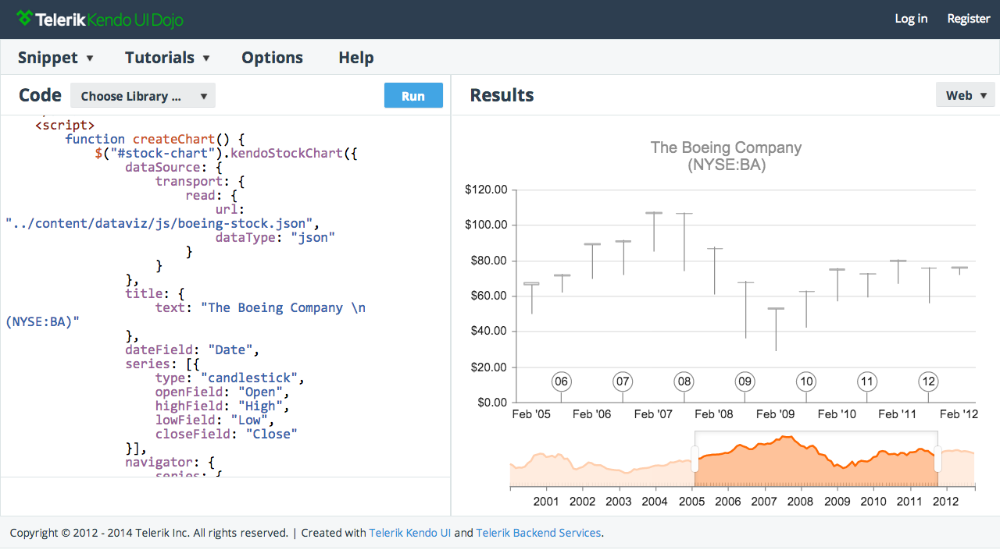
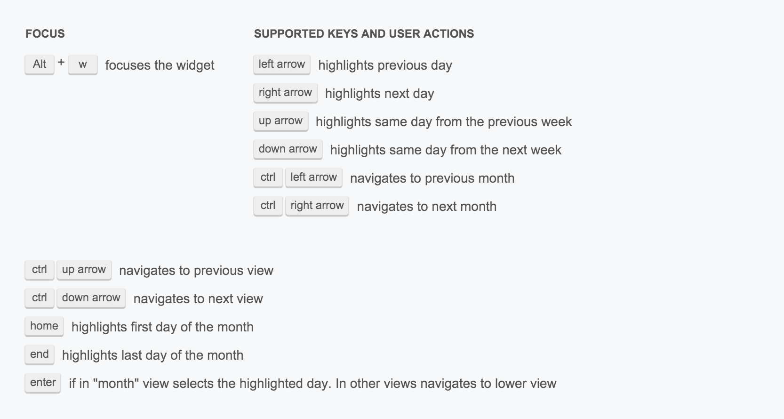
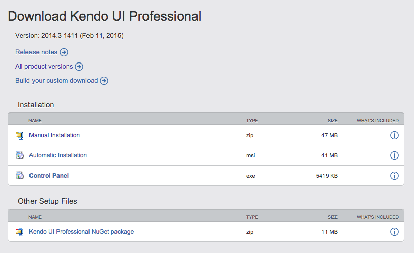

Chapter 1. Why Kendo UI
1.1 Comprehensive set of widgets & tools for building web sites and applications on computers and touch devices
The totality of Kendo UI parts makes it the most complete set of JavaScript/jQuery widgets and tools, from one source, that run in the widest range of browsers, on the widest range of hand held devices and computers. Consider that Kendo UI contains 70+ widgets and an extensive set of tools for building JavaScript applications:
- Drag & Drop
- DataSource
- Drawing API
- Effects / FX
- Globalization
- SPA tools
- Router
- Layout
- View
- Templates
- Validator
- MVVM
- Export & Save
1.2 The bulk of Kendo UI is free and open source
Most of Kendo UI is free (41+ widgets), and can be found on Github under the permissive Apache 2.0 license. This is what Telerik refers to as Kendo UI core. Historically, Kendo UI Core was a commercial solution but as of April 2014 it is freely available to anyone to be used for anything. That's right. Telerik is giving away part of a commercial, enterprise grade solution, for free, to anyone to be used for anything! No catch!
1.3 Widgets are jQuery based
The jQuery find-something-then-do-something pattern is likely the most prevalent pattern for working with the DOM today. It is likely impossible to find a developer who is not familiar with jQuery and its plugin architecture. Developers who have never used a jQuery-based UI toolkit, like Kendo UI, will already be familiar with it because of its similarities to jQuery and the jQuery plugin pattern.
1.4 Kendo UI and jQuery Plug-ins
The jQuery community contains the largest selection of JavaScript plug-ins available for doing front-end development. Just consider, on Github there are 19,257 repository results for the search “jquery+plugin”. As well, the jQuery project itself provides a repository of 2400+ community plugins.
If Kendo UI doesn't have or do exactly what you want, you legitimately have good options because it's jQuery based. Most any jQuery plugin can run alongside Kendo UI widgets, which are jQuery plug-ins themselves. It’s even programmatically reasonable to pick and choose parts from multiple jQuery UI widget toolkits to be used with Kendo UI with no fuss, overhead, conflicts, or fear of duplicating code.
1.5 Initialize widgets using imperative or declarative interfaces
Kendo UI widgets can be initialized imperatively using using the common jQuery plugin method pattern or declaratively from markup using several options including AngularJS Directives.
1.6 Integrated AngularJS Directives
Kendo UI provides official AngularJS directives for initializing web widgets and mobile widgets the Angular way (i.e. using a declarative interface via directives).
- AngularJS directives started being shipped and maintained as part of
kendo.all.min.jsin the July 16, 2014 Q2 release (i.e. 2014.2.716) - Telerik provides official support for Kendo UI AngularJS integrations via paid support
- Kendo officially supports AngularJS v1.3.x
- Be aware AngularJS 1.3 drops support for IE8. AngularJS 1.2 will continue to support IE8, but the core AngularJS team does not plan to spend time addressing issues specific to IE8 or earlier
- Choose AngularJS Data Binding/Routing or Kendo MVVM/Routing don't mix this solutions in a single application
- When loading individual Kendo UI files you need to also load
kendo.angular.js(orkendo.angular.min.js) afterkendo.core.js(orkendo.core.min.js) because this file contains the actual directives
1.7 Numerous options for including Kendo UI JavaScript
Kendo UI provides the most comprehensive set of options for including Kendo in a web page. You can include Kendo UI in one of the following five ways:
- One JavaScript file - Kendo UI can be included in a web page using a single JavaScript file, which includes everything.
- Individual source files - Kendo UI source is divided into a set of individual JavaScript modules, which have dependencies on each other. These files can individually be added to a web page and the dependencies will have to be managed manually (with your human brain in real time!) as opposed to using a dependency manager/loader like RequireJS that deals with which files are needed and when.
- AMD module/dependency loader - Because each source file is an module and wrapped in an AMD definition, a modular loading system such as RequireJS can be used to load and manage Kendo UI dependencies. Using a dependency loader alleviates having to manage dependencies manually which typically requires the correct ordering of inline
<script>tags in an html web page. - One custom JavaScript file - Using the Custom Download Tool a custom version of Kendo UI can be downloaded as a single, all in one, file (Note: you must create an account and be logged in to use the Custom Download tool).
- One custom Core JavaScript file - If you use Kendo UI Core, you can build a custom distribution using the grunt build tool by following the instructions in the README.
This makes Kendo UI the most versatile commercial solution for developers of varying skill, creating varying types of projects, from simple web pages to complex applications.
- Options 1-3 above can make use of local files and the official CDN.
- To make a custom build of Kendo UI you must create an account and be logged in to use the Custom Download tool.
- Kendo UI Core can be installed using the bower package manager.
- Both Kendo UI Core and Professional offer minified sourced files as well as minified all in one files in addition to non-minified files.
1.8 In-depth Getting Started docs and API docs
Kendo UI provides API documentation which details options, methods, and events for each widget or tool. Additionally, above and beyond the API documentation, a Getting Started overview is provided for each widget or tool. Very few commercial solutions provide such a resource, and if they do, it is nowhere as in depth as what is found in Kendo UI Getting Started documents.
1.9 Detailed demos immediately runnable and editable
Each widget contains a plethora of demos (e.g. the grid offers 36+ unique demos), all of which are immediately available to be edited in an official live, online code editor called the Telerik Kendo UI Dojo. This, of course, allows for easy editing and executing of the code as well as the means to copy and past demo code to other editors quickly.
The fact that the demos are immediately editable and runnable after edits in an official online editor sets Kendo UI apart from similar solutions.
1.10 Chrome Devtool extension to aid development
Telerik offers a Chrome Devtool extension so that a developer can gain information about widget configuration values, widget events, and any global Kendo UI errors that might be occurring during development.
1.11 Official Twitter Bootstrap theme
Kendo UI can be combined seamlessly with the powerful Bootstrap front-end framework by using an officially supported Kendo UI Bootstrap theme. By supporting Bootstrap, Kendo UI widgets can live along side anything that Bootstrap provides. The combination of Kendo UI and Bootstrap leaves little need for much else when building an application interfaces is a short amount of time.
1.12 Out-of-the-box themes and theme builder tools
The Kendo UI Web & DataViz widgets have 11 out-of-the-box themes that can be used. As well, each of the themes can be customized using the Telerik ThemeBuilder tool.
The Kendo UI Mobile widgets have 5 platform specific themes and 1 generic (flat skin). As well, each of the themes can be customized using the Telerik Mobile ThemeBuilder tool.
- The Kendo UI ThemeBuilder (used on Web and DataViz widgets) can be used as a bookmarklet on your own pages.
1.13 Localized widgets
By default, all widget messages are in English. This can be overwritten by including a language specific kendo.messages.[language here].js file along with your Kendo UI code. Kendo UI offers 20 official language packages or you can create a custom language file with the necessary translations.
- kendo.messages.en-US.js contains all widget messages and may be used as a reference when creating a new localization file. The easiest way to get started is to copy the file, rename it and translate the messages.
- Currently, translations are not available for every language and some of the localization files may be incomplete. The full list of currently available translations can be found in the Kendo UI Core repository
1.14 Accessible widgets
Kendo UI Web & DataViz widgets boast the following accessibility features:
Full ARIA support
Following the W3C’s “Widget Design Patterns” in the WAI-ARIA specification, Kendo UI will automatically add WAI-ARIA support when the appropriate role value and additional attributes are needed. For example, examine below the changes made to a number input when it’s converted to a Kendo UI NumericTextBox widget.
The code below shows the initial number input before a Kendo NumericTextBox is initiated:
<input id="amountOwed" type="number" value="17" min="0" max="100" step="1" />
After Kendo UI adds WAI-ARIA support:
<input id="numeric" type="text" value="17" min="0" max="100" step="1" data-role="numerictextbox" class="k-input" role="spinbutton" style="display: none;" tabindex="0" aria-valuemin="0" aria-valuemax="100" aria-valuenow="17" />
Accesskeys
Kendo UI recognizes and preserves accesskey attributes used to activate or focus elements in the page using the keyboard (e.g. in chrome Mac Ctrl + ⌥ Opt + accesskey).
The code below shows the use of an accesskey attribute on an input.
You verify that Kendo UI honors the accesskey after initialization below:
Right-to-left languages
Kendo UI supports setting up right-to-left languages globally (i.e. an entire application) or on-demand for individual widgets.
In order to enable RTL support include the kendo.rtl.css stylesheet in an html page. The RTL stylesheet should be registered after the common stylesheet and before the theme stylesheet. After the style sheet is included wrap Kendo widgets in an HTML element with a .k-rtl CSS class or assign the .k-rtl class to the <body> element to globally declare RTL for the entire application.
<!DOCTYPE html>
<html>
<head>
<link rel="stylesheet" href="http://cdn.kendostatic.com/2014.2.903/styles/kendo.common.min.css" />
<link rel="stylesheet" href="http://cdn.kendostatic.com/2014.2.903/styles/kendo.rtl.min.css" />
<link rel="stylesheet" href="http://cdn.kendostatic.com/2014.2.903/styles/kendo.default.min.css" />
</head>
<body class=".k-rtl"><!-- global rtl -->
<!-- or -->
<div id="myKendoUiWidget" class=".k-rtl"><!-- per widget rtl, remove global! -->
</div>
<script src="//cdnjs.cloudflare.com/ajax/libs/jquery/2.1.1/jquery.min.js"></script>
<script src="http://cdn.kendostatic.com/2014.2.903/js/kendo.all.min.js"></script>
</body>
</html>
Keyboard navigation
The following Kendo UI widgets come pre-wired with keyboard navigation controls:
- AutoComplete
- Calendar
- ComboBox
- DatePicker
- DateTimePicker
- DropDownList
- Editor
- Gantt
- Grid
- ListView
- Menu
- NumericTextBox
- PanelBar
- Slider
- Splitter
- TabStrip
- TimePicker
- TreeView
- Window
A good example of pre-wired keyboard navigations controls can be found on a Calendar. The keyboard buttons defined below can be used on any Calendar by default.
Give it a try (i.e. click on calendar to focus then use the keyboard to navigate the calendar):
JS BinHigh-contrast CSS theme
For users with low vision or other visual disabilities, a high-contrast theme is available for Kendo UI Web, DataViz, and Mobile widgets.
JS Bin- Long-term goal is to provide full WAI-ARI support as well as WCAG and Section 508 compliance in future releases for all of Kendo UI.
1.15 Globalized (i.e. multiple cultures) widgets
Kendo UI provides culture specific overrides (aka Globalization) for widgets (i.e. Calendar, DatePicker, TimePicker, DateTimePicker, NumericTextBox) that make use of number formats, week and month names, and date and time formats.
JS BinOver ridding [?] the default kendo.culture.en-US.min.js file is as simple as including a different culture file and telling Kendo UI to use it with the kendo.culture() method.
<script src="http://cdn.kendostatic.com/2014.2.716/js/cultures/kendo.culture.en-GB.min.js"></script>
<script type="text/javascript">
//set current to the "en-GB" culture script
kendo.culture("en-GB");
</script>
- When globalize.js is registered before Kendo scripts, then Kendo will use globalize.js features instead of Kendo Globalization.
- Kendo provides 355 culture files.
1.16 ASP, JSP & PHP server-side wrappers
The following server side widget wrappers, allowing Kendo UI development on the server, are available for purchase::
- ASP.NET MVC - 70+ ASP.NET MVC Components Powered by Kendo UI.
- JSP - 40+ JSP Components Powered by Kendo UI
- PHP - 40+ PHP Components Powered by Kendo UI.
1.17 Offline Widgets
Kendo UI allows data-bound widgets (i.e. widgets that use DataSource) to function without being online. Users can continue working while offline and data will be stored locally until network connectivity resumes.
Chapter 2. Kendo UI Overview
2.1 What is Kendo UI
Kendo UI, first and foremost, is a comprehensive set of commercial user interface widgets, based on jQuery, and written in JavaScript, to be used in the development of web sites/applications that run on the web platform.
In addition to UI widgets Kendo also provides tools for developing modern JavaScript applications (e.g. MVVM, DataSource, Templates, Effects/FX etc...). Many of these are used in can conjunction with the Kendo UI widgets themeselves (i.e. templates and DataSource).
Kendo UI is designed to run on laptop/desktop web browsers, as well as browsers on touch devices and WebiViews used in hybrid mobile application development.
Kendo UI Professional, the commercial version of Kendo used to develop line-of-business and data centric applications, is divided into the following 4 parts.
- Web widgets - Common application widgets (e.g. Date Picker)
- Data visualization widgets (AKA DataViz) - Widgets for displaying data visually (e.g Pie Chart)
- Application/framework tools - Tools for developing JavaScript applications (e.g. Views, MVVM, DataSource).
- Mobile widgets & mobile application/framework tools - Mobile specific widgets and set of application tools for building browser based applications on a phone or tablet for a browser or WebView (e.g. Tool Bar).
Kendo UI Core, the free and open sourced foundation professional is built upon , excludes the following professional widgets:
- Barcode
- Editor
- Grid
- Map
- QRCode
- Scheduler
- Diagram
- Treeview
- TreeList
- Upload
- Ganntt
- PivotGrid
- All DataViz widgets:
- Mobile widgets, by design, function on laptop and desktop browsers. This makes responsive, mobile-first UIs trivial to implement on phone and tablet devices, as well as desktop and laptop computers (desktop support for mobile specific widgets: Chrome Latest, Firefox latest, Opera 15+, Safari 5+, and IE 10+).
- The Web and DataViz widgets are supported on all the obvious modern browsers, but also include full support for IE7+ on Windows XP and Server 2003.
- The DataViz widgets function on iPhones and tablet devices.
- The Web and DataViz widgets are designed to function on both a mouse-driven and touch-driven interface, and a couple of the web widgets (e.g. Grid and Scheduler) offer an auto-mobile mode (aka mobile adaptive rendering).
- Kendo UI boasts the widest reaching mobile widgets by supporting the broadest range of devices/platforms (iOS 6.0+, Android 2.3+ (In Android 2.3 dataviz widgets support only Canvas rendering mode), BlackBerry OS 10+, Windows Phone 8+, Chrome for Android latest)
2.2 Supported browsers
Browser support is broken down into the following three areas:
Web widgets & application/framework tools:
| Browser | Supported versions |
|---|---|
| Internet Explorer | 7 and later |
| Chrome | 21 and later |
| Firefox | 24 and later, ESR |
| Opera | 15 and later |
| OS X Safari | 5 and later |
Mobile widgets & mobile application/framework tools:
| Browser | Supported versions |
|---|---|
| Internet Explorer | 10 and later |
| Firefox | Not supported |
| Others | Same as Core and Web widgets |
DataViz widgets:
| Browser | Supported versions |
|---|---|
| Internet Explorer | 9 and later (Internet Explorer 6, 7 and 8 are supported with limitations, see notes) |
| Chrome | 21 and later |
| Firefox | 24 and later, ESR |
| Opera | 15 and later |
| OS X Safari | 5 and later |
| iOS Safari | 4 and later |
| Chrome for Mobile | 4 and later |
- Internet Explorer 6, 7 and 8 are supported with the following limitations:
- PDF export is not supported.
- Image export is not supported.
- 64-bit versions do not support text rotation.
- Pie and donut charts don't have gradients
- Internet Explorer 10 does not support dashed lines in canvas. This affects the exportImage as well.
- Android 2.x will use non-interactive canvas output
2.3 Supported operating systems
| Operating System | Version |
|---|---|
| Windows | XP and later |
| Windows Server | Server 2003 and later |
| OS X | 10.5 and later |
| Android | 2.3 and later |
| iOS | 6.0 and later |
| BlackBerry | 10.0 and later |
| Windows Phone | 8.0 and later |
| Chrome for Mobile | Any |
2.4 Prerequisite knowledge for learning Kendo UI
As previously mentioned, Kendo UI is a set of HTML widgets driven by JavaScript. It is influenced and takes its cues from JQuery DOM/plugin patterns as well as the declarative data binding MVVM pattern made popular by Knockout.
Minimally, to get started with Kendo UI, one should have some basic knowledge about HTML, CSS, JavaScript, and the DOM. Knowledge of jQuery, Backbone, and Knockout, while not required to get started, will certainly make learning Kendo UI easier.
In addition to UI widgets, Kendo UI also offers tools for building JavaScript applications. These tools will require more advanced JavaScript knowledge about MV* patterns, SPA's, and data abstractions.
2.5 Getting Kendo UI Professional code
The Kendo UI professional source code can be obtained by creating a Telerik account and either purchasing a license or using a 30 day trial offer.
If you decide to use a trial of Kendo UI Professional, it will start to download to your local system once you have created a new account from the trial web page. If you have purchased a license, you can go into your account and select from several Kendo UI installation options (i.e. manual, automatic, control panel, Bower package), including creating a custom download/build of Kendo UI.
The simplest and fast way to get Kendo UI Professional if you have a license is to download it from your Telerik account product version page and manually install it. For example, in the image below you would click on the "Manual Installation" link in the table, Kendo UI will download, and you would then have access to all of the source files to run Kendo UI.
Once downloaded, and unzipped, you will find a directory with the following sub directories (image below showing professional download, not trial download).
├── README ├── changelog.html ├── examples //demos ├── js // minified JavaScript files ├── license-agreements ├── src //complete source code (not available in the trial) ├── styles //minified CSS, fonts, and images ├── typescript //typeScript definitions └── vsdoc //Visual Studio Intellisense docs
As a license holder, and depending upon your knowledge and use of Bower, it might be simpler to download and install Kendo UI professional using the Bower package manager.
$ bower install https://bower.telerik.com/bower-kendo-ui.git
You will be asked to give your Telerik account credentials to install Kendo UI professional from the Telerik hosted Bower endpoint. Keep in mind that the directory installed from Bower differs from the directory that can be downloaded from your Telerik account (directory installed from Bower shown below).
├── README.md ├── bower.json ├── js ├── src └── styles
- The 30-day trial requires signing up for a Telerik account.
- The 30-day trial does not include the
srcdirectory containing source files. - Kendo UI pricing is pretty simple. The starting price for Kendo UI is $699 per developer, royalty-free, source code included, updates for a year, and 10 incidents tickets with a 48 hour response time.
- A limited Professional version of Kendo is offered as minified code from a public CDN for developers to prototype with before purchasing.
2.6 Getting Kendo UI Core code
The Kendo UI Core code can be obtained in the following five ways:
- Download a zipped archive of the Kendo UI Core github repo
- Git clone the Kendo UI Core github repository
(i.e.git clone https://github.com/telerik/kendo-ui-core.git) - Sign up for a Telerik account and get a zipped directory of Kendo UI Core
- Use Bower to install the Kendo UI Core bower package (i.e.
$ bower install kendo-ui-core) - Use the Kendo CDN to include Kendo UI Core.
Once downloaded (or built using grunt) you will find a directory with the following sub directories.
├── README ├── changelog.html ├── js //minified JavaScript files ├── src //complete Core source code └── styles //minified CSS, fonts, and images
- Kendo UI Core is free for use by anyone for anything and does not contain professional widgets.
- Kendo UI Core is released under the Apache License, version 2.0.
2.7 Kendo UI releases & versions
Kendo UI typically has three major releases in a year (i.e. Q1, Q2, Q3) and several beta and service pack releases in between. The version number is based on the year of the release and the quarter (i.e. 2104.3.XXXX = year . quarter). The last four digits can be used, but not always, to signify the month and date the release occurred (i.e. 2014.3.1114 = 2014 - Quarter 3 - November 14th).
As of today the most recent release of Kendo UI is version 2105.1.318.
2.8 Kendo UI development status/news
The following resources provide the necessary details around past, present, and current Kendo UI development happenings.
2.9 Requesting new features, giving feedback, & reporting bugs
New features or feature enhancements can be requested on the Kendo UI UserVoice site.
http://kendoui-feedback.telerik.com/forums/127393-telerik-kendo-ui-feedback
This user voice site also facilitates:
- General feedback comments
- The status of upcoming features
- Community up or down voting of feature requests
Additionally, feedback can be sent to the Kendo UI team by creating a Telerik account and using the general feedback form from your account.
Bugs can be subitted for Kendo UI Core on Github. A specific bug ticket cannot be submitted to a bug tracking system for Kendo UI Professional parts. To discuss potential bugs found in Kendo UI professional with the Kendo team, you can use the general feedback form from a Telerik account or the user voice site if you are not a license holder. If you are a Kendo UI license holder you can also use paid support tickets or the public forums to submit/discuss any Kendo UI bugs.
2.10 API reference (i.e. the programmatic interface documentation for each widget)
All widgets and tools have a detailed API (Application Programming Interface) reference documenting the configuration options, methods, and events for each widget/tool. For example, the API reference for a Menu widget provides the following configuration options, methods, and event details.
- Configuration options (i.e. the options you can pass to a Menu instance):
- Methods (i.e. functions that be called to change the state of a Menu instance):
- Events (i.e. Menu instances events that can have unique callback functions):
Examine the JavaScript code below demonstrating a few configuration options, methods, and events from the Menu widget API docs.
- Most of the code found in the API reference can be immediately edited in a custom JSFiddle-like editor called "Kendo UI Dojo". Look for the "Edit this example" button on reference pages.
- The Kendo API reference can be contributed to through github.
2.11 Demos and widget documentation
Associating widget demos and documentation, in addition to the API reference, are available for each individual widget/tool. For example, the Menu widget has 13 individual demos, two pages of documentation, and three how to articles. All of these are specifically focused on demonstrating and documenting the Menu widget alone.
Menu demos:
- Basic usage
- Images
- Direction
- Orientation
- Animation effects
- Events
- API
- Context Menu
- RTL support
- Keyboard navigation
- MVVM
- AngularJS
- AngularJS - Context Menu
Menu documents:
- Overview
- Context Menu
- How To
Each Kendo UI widget/tool comes with this level of demonstration and documentation. To begin learning about a specific widget or tool examine the demos, read the documentation, then turn to the API documentation for implementation details.
- Consistency you'll find that each widget/tool will offer minimally a demo highlighting the widgets API, events, Keyboard navigation, RTL support, and associating AngularJS directive.
- The demos can be immediately edited in a custom JSFiddle-like editor called "Kendo UI Dojo". Look for the "Edit this example" button on demo pages to immediately edit demo code in your browser.
- Each demo has a link to the API reference for the widget/tool being demoed. Look for the button on the demo pages that says, "API Reference" to go immediately to the API reference for the widget.
- The Kendo API documentation can be contributed to through github.
- The demos are also available in the Trial and Professional download. Just open the examples/index.html in a web browser from your local file system.
2.12 Kendo UI Chrome DevTools extension
Telerik offers a Chrome Devtool extension to debug widgets and gain information about configuration values, widget events, and any global Kendo UI errors that might be occurring during development.
Chapter 3. Including Kendo UI Code
3.1 Overview of Kendo UI source code
Regardless of if you are using Kendo UI source code from a Professional download, Core download, or CDN, the directory structure will contain a js and styles directory that could, depending which source you are using, contain the following files (read carefully the highlighted comments).
├── js
│ ├── angular.min.js //version v1.3.0
│ ├── cultures
│ │ ├── ... //355 globaliztion files
│ ├── jquery.min.js //version 1.9.1
│ ├── jszip.min.js
│ ├── kendo.all.min.js //only in Professional download, all Professional widgets in one file
│ ├── kendo.angular.min.js
│ ├── kendo.autocomplete.min.js
│ ├── kendo.binder.min.js
│ ├── kendo.button.min.js
│ ├── kendo.calendar.min.js
│ ├── kendo.color.min.js
│ ├── kendo.colorpicker.min.js
│ ├── kendo.columnmenu.min.js
│ ├── kendo.columnsorter.min.js
│ ├── kendo.combobox.min.js
│ ├── kendo.core.min.js //base kendo file, only use when including widgets individually
│ ├── kendo.data.min.js
│ ├── kendo.data.odata.min.js
│ ├── kendo.data.signalr.min.js
│ ├── kendo.data.xml.min.js
│ ├── kendo.dataviz.barcode.min.js
│ ├── kendo.dataviz.chart.funnel.min.js
│ ├── kendo.dataviz.chart.min.js
│ ├── kendo.dataviz.chart.polar.min.js
│ ├── kendo.dataviz.core.min.js
│ ├── kendo.dataviz.diagram.min.js
│ ├── kendo.dataviz.gauge.min.js
│ ├── kendo.dataviz.map.min.js
│ ├── kendo.dataviz.min.js //only in Professional download, all dataviz widgets in one file
│ ├── kendo.dataviz.mobile.min.js
│ ├── kendo.dataviz.qrcode.min.js
│ ├── kendo.dataviz.sparkline.min.js
│ ├── kendo.dataviz.stock.min.js
│ ├── kendo.dataviz.themes.min.js
│ ├── kendo.dataviz.treemap.min.js
│ ├── kendo.datepicker.min.js
│ ├── kendo.datetimepicker.min.js
│ ├── kendo.dom.min.js
│ ├── kendo.draganddrop.min.js
│ ├── kendo.drawing.min.js
│ ├── kendo.dropdownlist.min.js
│ ├── kendo.editable.min.js
│ ├── kendo.editor.min.js
│ ├── kendo.excel.min.js
│ ├── kendo.filebrowser.min.js
│ ├── kendo.filtercell.min.js
│ ├── kendo.filtermenu.min.js
│ ├── kendo.fx.min.js
│ ├── kendo.gantt.list.min.js
│ ├── kendo.gantt.min.js
│ ├── kendo.gantt.timeline.min.js
│ ├── kendo.grid.min.js
│ ├── kendo.groupable.min.js
│ ├── kendo.imagebrowser.min.js
│ ├── kendo.list.min.js
│ ├── kendo.listview.min.js
│ ├── kendo.maskedtextbox.min.js
│ ├── kendo.menu.min.js
│ ├── kendo.menu.min.js.map
│ ├── kendo.mobile.actionsheet.min.js
│ ├── kendo.mobile.application.min.js
│ ├── kendo.mobile.button.min.js
│ ├── kendo.mobile.buttongroup.min.js
│ ├── kendo.mobile.drawer.min.js
│ ├── kendo.mobile.listview.min.js
│ ├── kendo.mobile.loader.min.js
│ ├── kendo.mobile.min.js //only in Professional download, all mobile widgets in one file
│ ├── kendo.mobile.min.js.map
│ ├── kendo.mobile.modalview.min.js
│ ├── kendo.mobile.navbar.min.js
│ ├── kendo.mobile.pane.min.js
│ ├── kendo.mobile.popover.min.js
│ ├── kendo.mobile.scroller.min.js
│ ├── kendo.mobile.scrollview.min.js
│ ├── kendo.mobile.shim.min.js
│ ├── kendo.mobile.splitview.min.js
│ ├── kendo.mobile.switch.min.js
│ ├── kendo.mobile.tabstrip.min.js
│ ├── kendo.mobile.view.min.js
│ ├── kendo.multiselect.min.js
│ ├── kendo.notification.min.js
│ ├── kendo.numerictextbox.min.js
│ ├── kendo.ooxml.min.js
│ ├── kendo.pager.min.js
│ ├── kendo.panelbar.min.js
│ ├── kendo.pdf.min.js
│ ├── kendo.pivot.configurator.min.js
│ ├── kendo.pivot.fieldmenu.min.js
│ ├── kendo.pivotgrid.min.js
│ ├── kendo.popup.min.js
│ ├── kendo.progressbar.min.js
│ ├── kendo.reorderable.min.js
│ ├── kendo.resizable.min.js
│ ├── kendo.router.min.js
│ ├── kendo.scheduler.agendaview.min.js
│ ├── kendo.scheduler.dayview.min.js
│ ├── kendo.scheduler.min.js
│ ├── kendo.scheduler.monthview.min.js
│ ├── kendo.scheduler.recurrence.min.js
│ ├── kendo.scheduler.timelineview.min.js
│ ├── kendo.scheduler.view.min.js
│ ├── kendo.selectable.min.js
│ ├── kendo.slider.min.js
│ ├── kendo.sortable.min.js
│ ├── kendo.splitter.min.js
│ ├── kendo.tabstrip.min.js
│ ├── kendo.timepicker.min.js
│ ├── kendo.timezones.min.js
│ ├── kendo.toolbar.min.js
│ ├── kendo.tooltip.min.js
│ ├── kendo.touch.min.js
│ ├── kendo.treelist.min.js
│ ├── kendo.treeview.min.js
│ ├── kendo.ui.core.min.js //only in Core download, all Core widgets in one file
│ ├── kendo.upload.min.js
│ ├── kendo.userevents.min.js
│ ├── kendo.validator.min.js
│ ├── kendo.view.min.js
│ ├── kendo.web.min.js //only in Professional download, all web widgets in one file
│ ├── kendo.window.min.js
│ ├── messages
│ │ ├── ... //20 official localized language packs
│ └── pako_deflate.min.js
└── styles
├── ... //Bootstrap, Default themes etc... theme specific images & fonts
├── images //global images used in CSS files
│ ├── back.png
│ ├── kendoui.svg
│ ├── kendoui.ttf
│ ├── kendoui.woff
│ ├── wp8_icons.png
│ └── wp8_inverseicons.png
├── kendo.black.min.css
├── kendo.black.mobile.min.css
├── kendo.blueopal.min.css
├── kendo.blueopal.mobile.min.css
├── kendo.bootstrap.min.css
├── kendo.bootstrap.mobile.min.css
├── kendo.common-bootstrap.core.min.css
├── kendo.common-bootstrap.min.css
├── kendo.common-material.core.min.css
├── kendo.common-material.min.css
├── kendo.common.core.min.css //only common CSS, excluding theme CSS, for core widgets
├── kendo.common.min.css //common CSS, excluding theme CSS, for all widgets
├── kendo.dataviz.black.min.css
├── kendo.dataviz.blueopal.min.css
├── kendo.dataviz.bootstrap.min.css
├── kendo.dataviz.default.min.css
├── kendo.dataviz.flat.min.css
├── kendo.dataviz.highcontrast.min.css
├── kendo.dataviz.material.min.css
├── kendo.dataviz.materialblack.min.css
├── kendo.dataviz.metro.min.css
├── kendo.dataviz.metroblack.min.css
├── kendo.dataviz.min.css
├── kendo.dataviz.mobile.min.css
├── kendo.dataviz.moonlight.min.css
├── kendo.dataviz.silver.min.css
├── kendo.dataviz.uniform.min.css
├── kendo.default.min.css
├── kendo.default.mobile.min.css
├── kendo.flat.min.css
├── kendo.flat.mobile.min.css
├── kendo.highcontrast.min.css
├── kendo.highcontrast.mobile.min.css
├── kendo.material.min.css
├── kendo.material.mobile.min.css
├── kendo.materialblack.min.css
├── kendo.materialblack.mobile.min.css
├── kendo.metro.min.css
├── kendo.metro.mobile.min.css
├── kendo.metroblack.min.css
├── kendo.metroblack.mobile.min.css
├── kendo.mobile.all.min.css //includes common CSS and all themes in one file
├── kendo.mobile.android.dark.min.css
├── kendo.mobile.android.light.min.css
├── kendo.mobile.blackberry.min.css
├── kendo.mobile.common.min.css //common CSS for all widgets, excludes themes
├── kendo.mobile.flat.min.css
├── kendo.mobile.ios.min.css
├── kendo.mobile.material.min.css
├── kendo.mobile.meego.min.css
├── kendo.mobile.wp8.min.css
├── kendo.moonlight.min.css
├── kendo.moonlight.mobile.min.css
├── kendo.rtl.css
├── kendo.rtl.min.css
├── kendo.silver.min.css
├── kendo.silver.mobile.min.css
├── kendo.uniform.min.css
├── kendo.uniform.mobile.min.css
└── textures
├── ... //contains texture images referenced in CSS
Several things to note about the folder structure are:
- Kendo ships with three third-party librarys, AngularJS, jQuery, and JSzip. This is out of convenience and, while you are not required to use them, you should be aware of the versions which are officially supported.
- Obviously, the professional source will differ from the CDN and Core source files and directories. The directory structure I am showing is a combination of all these sources (i.e. not exactly what is downloaded) so you can understand what is offered from each.
- Two strategies for including Kendo UI widgets are possible. The first is simply including bundled files (i.e. kendo.all.min.js) which contains large groupings of widgets in one file. The second option would be to include the
kendo.core.min.jsfile then each individual widget/tool module (i.e. kendo.menu.min.js) and all its dependencies. - The CDN offers the directory structure above excluding non-minified files. The CDN is version, which should be obvious based on the url's to the files on the CDN (e.g.
http://cdn.kendostatic.com/2015.1.318/styles/...andhttp://cdn.kendostatic.com/2015.1.318/js/...). Note, that no "the latest" CDN (i.e. not a version, just the latest) endpoint is offered for Kendo UI.
The remainder of this book will show code examples using professional source code hosted locally or from the CDN. It's assume from this point forward that the above directory structure is in place no matter if code in the book is shown referencing the CDN or locally hosted files.
The purpose in stating this is so that you realize that the CSS files included in your HTML document will not work correctly without the proper file system placement of the theme, images, and textures directories in relation to the CSS files.
The two code examples below demonstrate the minimally required source files (i.e. two .js files and two .css files) to run Kendo UI. Don't forget that the CSS files will only provide the correct CSS if the theme, images, and textures directories are also properly put on the same file system serving the CSS files (i.e. the CSS dependencies, defined in the CSS files, are relative references).
Running Kendo UI Professional from CDN source code:
<!DOCTYPE html>
<html>
<head>
<meta charset="utf-8">
<link rel="stylesheet" href="http://cdn.kendostatic.com/2015.1.318/styles/kendo.common.min.css" />
<link rel="stylesheet" href="http://cdn.kendostatic.com/2015.1.318/styles/kendo.[PICK A THEME].min.css" />
</head>
<body>
<input id="datepicker" value="10/10/2011" style="width:150px;" />
<script src="http://cdn.kendostatic.com/2015.1.318/js/jquery.min.js"></script>
<script src="http://cdn.kendostatic.com/2015.1.318/js/kendo.all.min.js"></script>
<script> $('#datepicker').kendoDatePicker(); </script>
</body>
</html>
Running Kendo UI Professional from locally hosted source code:
<!DOCTYPE html>
<html>
<head>
<meta charset="utf-8">
<link rel="stylesheet" href="styles/kendo.common.min.css" />
<link rel="stylesheet" href="styles/kendo.[PICK A THEME].min.css" />
</head>
<body>
<input id="datepicker" value="10/10/2011" style="width:150px;" />
<script src="http://cdn.kendostatic.com/2015.1.318/js/jquery.min.js"></script>
<script src="js/kendo.all.min.js"></script>
<script> $('#datepicker').kendoDatePicker(); </script>
</body>
</html>
The rest of this chapter will offer more details and options when including Kendo UI CSS files, dependencies, and JavaScript files in HTML documents.
3.2 First, include CSS files
Kendo UI Professional potentially can use the following seven css files:
<!DOCTYPE html>
<html>
<head>
<!-- REQUIRED -->
<!-- common CSS -->
<link rel="stylesheet" href="styles/kendo.common.min.css" />
<!-- CSS theme -->
<link rel="stylesheet" href="styles/kendo.[SELECT A THEME].min.css" />
<!-- OPTIONAL -->
<!-- Right-to-left CSS -->
<link rel="stylesheet" href="styles/kendo.rtl.min.css" />
<!-- DataViz common CSS -->
<link rel="stylesheet" href="styles/kendo.dataviz.min.css" />
<!-- DataViz CSS theme -->
<link rel="stylesheet" href="styles/kendo.dataviz.default.min.css" />
<!-- mobile CSS -->
<link rel="stylesheet" href="styles/kendo.mobile.common.min.css" />
<!-- mobile CSS theme -->
<link rel="stylesheet" href="styles/kendo.mobile.[SELECT A THEME].min.css" />
</head>
<body>
</body>
</html>
Kendo UI Core potentially can use the following four css files:
<!DOCTYPE html>
<html>
<head>
<!-- REQUIRED -->
<!-- common CSS -->
<link rel="stylesheet" href="styles/kendo.common.min.css" />
<!-- CSS theme -->
<link rel="stylesheet" href="styles/kendo.[SELECT A THEME].min.css" />
<!-- OPTIONAL -->
<!-- Right-to-left CSS -->
<link rel="stylesheet" href="styles/kendo.rtl.min.css" />
<!-- mobile CSS -->
<link rel="stylesheet" href="styles/kendo.mobile.common.min.css" />
<!-- mobile CSS theme -->
<link rel="stylesheet" href="styles/kendo.mobile.[SELECT A THEME].min.css" />
</head>
<body>
</body>
</html>
3.3 Second, include jQuery dependency
Kendo has one hard third-party dependency on the jQuery JavaScript Library. In order to use Kendo UI in an HTML page you must first include jQuery so that it is loaded before Kendo UI code runs.
<!DOCTYPE html>
<html>
<head>
<meta charset="utf-8">
<link rel="stylesheet" href="styles/kendo.common.css" />
<link rel="stylesheet" href="styles/kendo.default.css" />
</head>
<body>
<input id="datepicker" value="10/10/2011" style="width:150px;" />
<!-- load jQuery before Kendo UI -->
<script src="js/jquery.min.js"></script>
<!-- load Kendo UI after the browser has loaded and parsed jQuery -->
<script src="js/[kendo.all.min.js or kendo.ui.core.min.js]"></script>
<script> $('#datepicker').kendoDatePicker(); </script>
</body>
</html>
Both Kendo UI Professional and Core ship with jQuery 1.9.1. However, Kendo UI is tested and works with jQuery 1.10.x and 2.0.x)
The following list provides jQuery current and historical compatibility information about the major Kendo UI releases:
- Kendo UI 2014.3.1119 (Q3 2014) - jQuery 1.9.1 (also works with 1.10.x and 2.0.x)
- Kendo UI 2014.2.716 (Q2 2014) - jQuery 1.9.1 (also works with 1.10.x and 2.0.x)
- Kendo UI 2014.1.318 (Q1 2014) - jQuery 1.9.1 (also works with 1.10.x and 2.0.x)
- Kendo UI 2013.3.1119 (Q3 2013) - jQuery 1.9.1 (also works with 1.10.x and 2.0.x)
- Kendo UI 2013.2.716 (Q2 2013) - jQuery 1.9.1
- Kendo UI 2013.1.319 (Q1 2013) - jQuery 1.9.1
- Kendo UI 2012.3.1114 (Q3 2012) - jQuery 1.8.2
- Kendo UI 2012.2.710 (Q2 2012) - jQuery 1.7.1
- Kendo UI 2012.1.322 (Q1 2012) - jQuery 1.7.1
- Kendo UI 2011.3.1129 (Q3 2011) - jQuery 1.7.1
- Currently Kendo UI has no plans to stop using jQuery
- If you use jQuery from a third-party CDN in production you should make sure you have a fallback if the CDN goes down.
- Kendo UI has soft dependencies on
angular.min.jsandjszip.min.jsbut soft dependencies are not required to minimally make Kendo UI function.
3.4 Third, included bundled JavaScript files
Minimally, Kendo UI will function (assuming you have included minimal CSS files too) by simply including two JavaScript files in the correct order. One being jQuery and the other being either kendo.all.min.js or kendo.ui.core.min.js, in that order. These two files bundle up all of the available widgets and tools for the respecting Kendo UI versions.
The kendo.all.min.js file bundling up all of Kendo UI Professional widgets and tools and the kendo.ui.core.min.js bundling up all of the Core widgets and tools.
A third JavaScript file could be used to configure Professional or Core widgets when configuring the widgets for a different culture other than the U.S. English culture.
The two code examples below display what an HTML file could potentially resemble in terms of CSS and JS includes for both Professional and Core projects using Kendo UI.
Professional:
<!DOCTYPE html>
<html>
<head>
<link rel="stylesheet" href="styles/kendo.common.min.css" />
<link rel="stylesheet" href="styles/kendo.[SELECT A THEME].min.css" />
<!-- OPTIONAL, only needed if dataviz widgets are used -->
<link rel="stylesheet" href="styles/kendo.dataviz.min.css" />
<link rel="stylesheet" href="styles/kendo.dataviz.[SELECT A THEME].min.css" />
</head>
<body>
<input id="datepicker" value="10/10/2011" style="width:150px;" />
<script src="js/jquery.min.js"></script>
<script src="js/kendo.all.min.js"></script>
<!-- OPTIONAL, only need if you want to override EN US -->
<script src="js/cultures/kendo.culture.[pick your culture].min.js"></script>
<script> $('#datepicker').kendoDatePicker(); </script>
</body>
</html>
Core:
<!DOCTYPE html>
<html>
<head>
<link rel="stylesheet" href="styles/kendo.common.min.css" />
<link rel="stylesheet" href="styles/kendo.[SELECT A THEME].min.css" />
</head>
<body>
<input id="datepicker" value="10/10/2011" style="width:150px;" />
<script src="js/jquery.min.js"></script>
<script src="js/kendo.ui.core.min.js"></script>
<!-- OPTIONAL, only need if you want to overide EN US -->
<script src="js/cultures/kendo.culture.[pick your culture].min.js"></script>
<script> $('#datepicker').kendoDatePicker(); </script>
</body>
</html>
If you only seek to use the mobile widgets and you have a professional license, then you can use the kendo.mobile.min.js bundled file containing only the mobile widgets:
<!DOCTYPE html>
<html>
<head>
<link rel="stylesheet" href="styles/kendo.mobile.common.min.css" />
<link rel="stylesheet" href="styles/kendo.mobile.[SELECT A THEME].min.css" />
<!-- OPTIONAL, only needed if dataviz widgets are used -->
<link rel="stylesheet" href="styles/kendo.dataviz.mobile.min.css" />
</head>
<body>
<script src="js/jquery.min.js"></script>
<script src="js/kendo.mobile.min.js"></script>
<!-- OPTIONAL, only needed if dataviz widgets are used -->
<script src="js/kendo.dataviz.mobile.min.js"></script>
</body>
</html>
Otherwise, if you want to use the Kendo UI Core source code for a mobile project, you will just have to use the kendo.ui.core.min.js, which includes all the Core web widgets as well mobile widgets:
<!DOCTYPE html>
<html>
<head>
<link rel="stylesheet" href="styles/kendo.mobile.common.min.css" />
<link rel="stylesheet" href="styles/kendo.mobile.[SELECT A THEME].min.css" />
</head>
<body>
<script src="js/jquery.min.js"></script>
<script src="js/kendo.ui.core.min.js"></script>
</body>
</html>
- The CDN hosts both the Professional and Core bundle of Kendo UI widgets.
- Professional licenses holders have additional bundled using
kendo.dataviz.min.js,kendo.web.min.js(includes framework tools), orkendo.mobile.min.jsto include only the widgets being used. In other words, if you only make use of web widgets then Professional users can usekendo.web.min.jsinstead ofkendo.all.min.js. - Custom bundles are possible for both Professional widgets and Core widgets. Building a custom bundle can be done for Professional users by way of a online build tool and Core users can create custom Core bundles from using grunt.
3.5 Using individual JavaScript files instead of bundled files
It is possible to include only the JavaScript required to run specific widgets, as opposed to using bundled JavaScript files. In order to include individual widgets and tools replace kendo.all.min.js or kendo.ui.core.min.js with kendo.core.min.js. Then, include the individual widgets .js file, as well as all of the dependencies for the individual widget in the correct order.
The code below demonstrates how to include the minimal amount of JavaScript to use the DatePicker widget and MVVM tools.
<!DOCTYPE html>
<html>
<head>
<link rel="stylesheet" href="styles/kendo.common.min.css" />
<link rel="stylesheet" href="styles/kendo.[SELECT A THEME].min.css" />
</head>
<body>
<input id="datepicker" value="10/10/2011" style="width:150px;" />
<script src="js/jquery.min.js"></script>
<script src="js/kendo.core.min.js"></script>
<script src="js/kendo.data.min.js"></script>
<script src="js/kendo.binder.min.js"></script>
<script src="js/kendo.calendar.min.js"></script>
<script src="js/kendo.popup.min.js"></script>
<script src="js/kendo.datepicker.min.js"></script>
<script> $('#datepicker').kendoDatePicker(); </script>
</body>
</html>
- Don't confuse the JavaScript file
kendo.ui.core.min.jswithkendo.core.min.js. Thekendo.ui.core.min.jscontains all of the Core widgets while thekendo.core.min.jsis the core JavaScript file required by all widgets. - The documentation provides a list of all widgets and tools that can be included individually and provides a link to a list of dependencies for each.
- Keep in mind that Kendo UI code supports the use of an AMD loader. Use webpack or jspm.io). Including individual widgets/tools and managing their dependencies can quickly become, well, unmanageable depending upon how many individual parts you include and the overlapping similarities between the dependencies. For this reason, if you want to include a large number of widgets and tools individually, you would probably be better off using an AMD loader to manager dependencies.
Chapter 4. Creating Kendo UI Widgets
4.1 Overview of instantiating widgets
A Kendo UI widget can be created (i.e. instantiated) in four ways.
- Imperatively using jQuery methods
- Declaratively from markup when binding a model to a view (i.e. MVVM)
- Declaratively from markup when a
Viewis rendered to the DOM - Declaratively from markup in AngularJS applications using directives
This chapter will examine the four ways that a widget can be created and briefly discuss the use of template and DataSource objects as configuration values for widgets.
4.2 Imperatively instantiate widgets using jQuery methods
As previous stated Kendo UI widgets are offered as jQuery plugins. Meaning that they are available as methods of a jQuery instance (i.e. jQuery.prototype.kendo['name of widget']).
The format of a jQuery widget method name is; "kendo" + NameOfTheWidget in Pascal Case. For example, the auto complete widget method name would be .kendoAutoComplete().
In the code example below the <div> element is selected in the HTML document using jQuery and then the kendoCalendar() method is called to instantiate a calendar widget from the <div>.
Just like most jQuery methods and plugins, Kendo UI methods can be passed arguments (via a single object) to configure the widget being instantiated. In the code example below notice that the calendar widget is being sent the max, min, start, and value configuration options, as well as a callback for the calendar change event.
When creating widgets, you'll need to make sure the correct HTML element is being used (refer to the demos, docs, and api). For example, to create an auto complete widget, the method assumes that it's being invoked on a <input> element otherwise the widget does not function properly. If the creation of a widget is failing, always verify that the widget is being instantiated on the correct HTML element.
- Kendo methods follow the jQuery plugin pattern and return the jQuery object so that additional methods can be chained after invoking a Kendo method.
- Calling a Kendo UI method on more than one HTML element will instantiate a widget instance for each HTML element selected.
- Widget options can be updated/set after initial widget instantiation using the
.setOptions()widget method.
4.3 Instantiate widgets declaratively (from markup) using MVVM
Kendo UI offers an MVVM (aka Model View ViewModel) solution similar to Knockout that two way binds a model (i.e. the data) to a view (i.e. the HTML). Anytime a binding (i.e. kendo.bind()) occurs the HTML involved can also be used to declaratively instantiate a widget.
To instantiate a widget during data binding, place a data-role attribute on the appropriate HTML element with a value that is the name of a widget in all lowercase. For example, in the code below I am creating a kendo.ui.AutoComplete widget by given an <input> an attribute and value of, data-role="autocomplete". When kendo.bind() is called on the HTML it will examine the HTML and all child [?] HTML for data-role attributes and then instantiate widgets as directed by the data-role attribute value.
Note that any widget configuration arguments required during instantiation are also being passed as HTML attributes in the form of data-[configuration-option-name]="value". For example, in the previous code example I am setting the dataSource configuration option (i.e. data-source="['Ant', 'Antilope', 'Badger', 'Beaver', 'Bird']") using an HTML attribute and value. Configuration options from the API can be converted to attributes by changing the camel case configuration name to dash-separated, and then pre-pending with "data-". For example, the auto complete widget configuration {ignoreCase='false'}; when used in HTML would become data-ignore-case="false".
A lot more can be said about using MVVM and widgets together. However, at this point, you just need to realize that instantiating widgets from markup (i.e. declaratively) can be accomplished during data binding and this is an alternative to creating widgets the jQuery way.
- Configuration options which start with "data" do not require an additional "data" in the attribute name e.g. the
dataTextFieldoption is set via thedata-text-fieldattribute anddataSourceis set via thedata-source attribute. - Initializing a widget during data binding works, by default, for any widget in the
kendo.ui.[NAME OF WIDGET]namespace.
4.4 Instantiate widgets declaratively (from markup) in kendo.View's
Kendo UI offers a View abstraction similar to a Backbone view but a little more light weight. When a View is render()ed any HTML elements with a data-role attribute and widget name value will get instantiated upon rendering. This is identical to how widgets are instantiated from HTML during MVVM binding in terms of declaring which HTML elements should be turned into Kendo UI widgets.
In the code below, an auto complete widget is being instantiated from HTML contained in a Kendo UI template when the myView View renders the template to the DOM.
Don't concern yourself with the details of a View if you are unfamiliar with such an abstraction. Just keep in mind that widgets can be instantiated from view markup (i.e. data-role="[name of widget]") when the view is being rendered to the DOM.
- A Kendo UI mobile application can instantiate, upon creation (i.e.
new kendo.mobile.Application()), widgets in the same way a widget can be created usingrender() - Internally, MVVM is used to create widgets from markup in
View's and mobile applications. - It's possible to sidestep Kendo UI
View's and simply usekendo.init()to instantiate Kendo UI widgets in a given DOM element based on role data attributes.
4.5 Instantiate widgets declaratively (from markup) using AngularJS directives
Kendo UI provides official AngularJS directives for initializing widgets the Angular way using custom element attributes or custom tag names. In the code example kendo.directives are injected into the "ctrl" controller making the kendo-auto-complete directive available to instantiate a widget from markup the Angular way.
For more details about using Kendo UI AngularJS directives read the "Using Kendo with AngualrJS" and associating documents.
- Kendo officially supports AngularJS v1.3.x
- Be aware AngularJS 1.3 drops support for IE8. AngularJS 1.2 will continue to support IE8, but the core AngularJS team does not plan to spend time addressing issues specific to IE8 or earlier.
- Choose either AngularJS data binding/routing or Kendo MVVM/routing don't mix the solutions in a single application.
- When loading individual Kendo UI files you need to also load
kendo.angular.js(orkendo.angular.min.js) afterkendo.core.js(orkendo.core.min.js) because this file contains the actual directives.
4.6 Using Template and DataSource as configuration values with widgets
Kendo UI provides standalone abstractions for templating (i.e. template) and data management (i.e. DataSource). Both of these abstractions are decoupled from widgets but are intended to be used in conjunction with widgets as configuration values for widgets. A good deal of the widgets have configuration options that optionally accept template or DataSource instances.
The code example below demonstrates the instantiation of an auto complete widget using both a kendo.template() and a kendo.data.DataSource() instance as configuration values for the auto complete widget.
After getting Kendo UI installed and deciding how you will instantiate the widgets the next order of business should be to learn, in detail, the in's and out's of the Kendo UI template and DataSource abstractions. I have only briefly introduced them here to communicate their importances as it pertains to creating Kendo UI widgets.
Chapter 5. Kendo UI Widget Basics
5.1 Getting reference/pointer to widget instance
Once you have created a widget it is possible that you will want to do something with it, even after initially instantiating it with options. For example, you might want to call widget methods, bind/unbind widget events, or destroy the widget instance. In order to accomplish all of this, you will need a reference to the widget instance. Regardless of if you created the widget using a jQuery method or markup (i.e. via MVVM or Views), you will have to use JavaScript to get a reference to the DOM element the widget was initialized on. Once you have a reference to the original element in the DOM the widget was instantiated on you can use the .data('kendoNameOfWidget') / .getKendoNameOfWidget jQuery methods or the kendo.widgetInstance() method to gain/return a reference to the actual widget instance.
In the code example below I demonstrate both solutions for gaining a reference to a widget instance.
JS Bin5.2 Calling widget methods
Each widget has a set of methods that are unique to that widget as well some methods that are inherited and available to all widgets. To invoke methods on a widget after instantiation get a reference to the widget then invoke any of the methods the widgets instance inherits. Below, I show three examples of grabbing an element from the DOM that an auto complete widget was initialized on, getting a reference to the widget instance, then calling the value() AutoComplete method.
You can reference the API documents for the methods available to each widget.
5.3 Setting & getting widget instance options
A widget can have its configurations options set or updated after instantiation by using the setOptions() method inherited by all widget instances.
In the code example below I am updating configuration options and passing new options to the calendar widget after instantiation using setOptions().
It can be useful to know the current configuration values for a widget before updating it using setOptions(). Most widgets offer an options property on the widget instance object, which is an object containing the configuration options and there current values.
In the code example below I inject into the HTML document all of the options and current values for a calendar widget using the options property.
5.4 Binding/unbinding widget events
During instantiation, widget events can be configured just like configuration options. In the code below a callback function is configured during instantiation to run any time the change event is broadcast-ed by the widget.
$('#autocomplete').kendoAutoComplete({
change: function(e){ //define callback for change event
console.log(e);
}
});
After a widget is instantiated, in order to set, update, or remove an event you will have to use the bind() and unbind() methods that are inherited by all widget instances.
In the code example below I add two events (i.e. callback functions) to the menu widget using bind() and then use the unbind() method to remove these events when the "remove events" button is clicked.
- A widget can have multiple callbacks assigned to a single event and each callback will be invoked. For example, adding two
closeevents to a menu does not only invoke the lastclosecallback defined. - You can
unbind()a specific callback function as long as you have a way to reference the callback function (i.e. you haven't used an anonymous function). The unbind() method accepts a second argument which is a reference to the specific callback function to be unbound. If you don't specify a callback handler function when usingunbind()all callbacks for the event will be removed.
5.5 Invoke a widget event once
To have a callback function be called only once when a widget event occurs, use the one() widget method to add the event instead of bind().
In the code example below I add two events to a menu widget that run only once and then the callbacks are automatically unbound.
JS Bin5.6 Manually triggering a widget event
Using the widget trigger() method it is possible to manually set off an event on a widget.
In the code example below I manually trigger the click event on a Kendo button widget.
5.7 Accessing widget event details and functions
Widget events pass one argument to event callback functions. The argument is called the event object and contains the following event related information and functions:
.sender- a reference to the widget instance that triggered the event.preventDefault()- cancel default event effects on widget when called in the scope of the callback function.isDefaultPrevented()- returns boolean value of current state ofpreventDefault()
In the code example below I use the event parameter as a reference to the event object passed to all widget event callback functions to get a reference to the button widget instance and specifically the click event option passed to the button widget.
5.8 Using custom events on widgets
The bind() and unbind() methods are actually inherited from kendo.Observable for each widget. And each widget inherits from kendo.ui.Widget, which directly inherits from kendo.Observable. Because kendo.Observable is just a reusable pattern for listening and firing events on objects, we can use the bind() and trigger() methods to setup custom events on widgets and trigger them.
In the code example below I am adding a custom event called 'foo' to the button widget and then immediately trigger it.
JS Bin- Custom events can't be passed as configuration options at the time of instantiation
5.9 Referencing the top most element that wraps a widget in the DOM
Widget instances have a property called .wrapper that contains a jQuery object with the outer most element selected which wraps the widget in the DOM.
In the code example below I use the .wrapper property to invoke the jQuery prop() method returning the name of the outer most element that is wrapping the grid.
5.10 Referencing the element the widget was initialized on in the DOM
Widget instances have a property called .element that contains a jQuery object with the element the widget was instantiated on, pre-selected (i.e. already wrapped jQuery sugar).
In the code example below I use the .element property to log to the console the name of the element that the grid widget was instantiated on by way of the jQuery prop() method.
5.11 Destroying widgets
Every widget has a destory() method which does the following:
- Deletes the widget instance.
- Removes auto-generated HTML content, which is outside the widget, e.g. detached popups, dropdowns, etc. The main widget HTML remains intact and if needed, it should be removed from the DOM manually. The Window widget is an exception, as it represents a detached popup on its own.
- Destroys all child widgets with the help of
kendo.destroy()method.
In the code example below I am creating a button widget which upon clicking will destroy itself and then empty and remove the element the button widget was originally instantiated on (i.e. <button>).
The kendo.destroy() function is offered to destroy multiple widgets with one call. Pass kendo.destroy() a DOM element and all widgets contained on in in the DOM element will have it's widget .destroy() method called.
- Destroying a widget does not empty or remove the DOM elements that were in place when the widget was instantiated. One will have to manually remove these DOM elements to totally remove all traces of the widget.
- Kendo UI widgets are destroyed automatically when the web page is unloaded.
- Creating a new widget instance from the leftovers of a destroyed widget may work, but is not recommended.